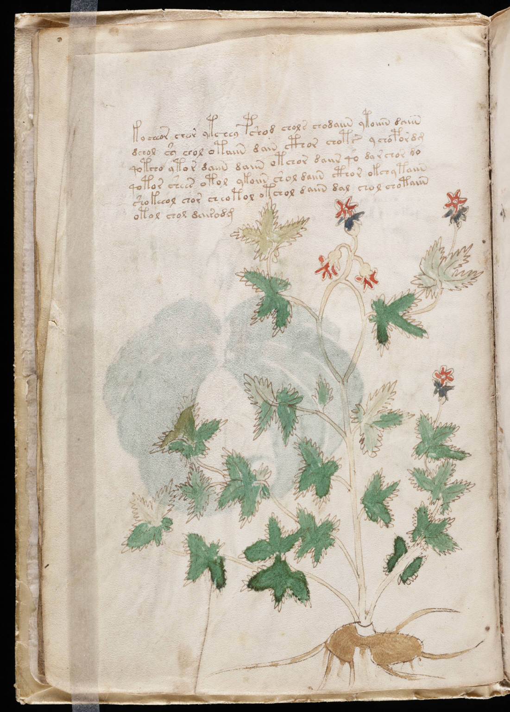

Voynich
Words
Folio
About
f5v
1
kocheor
chor
ytchey
pshod
chols
chodaiin
ytoiiin
daiin
2
dchol
sy
chol
otaiin
dain
cthor
chots
ychopordg
3
qotcho
ytor
daiin
daiin
otchor
daiir
qo
darchor
do
4
qotor
shees
otol
ykoiin
shol
daiin
cthor
okchy
taiin
5
shokeeol
chor
cheotol
otchol
daiin
dal
chol
chotaiin
6
otol
chol
dairodg
<<
<
>
>>
